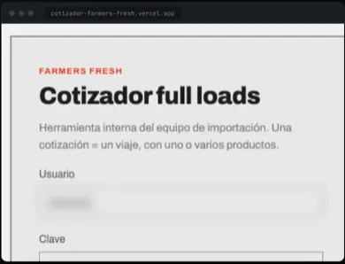
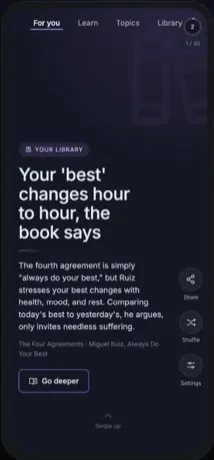

A second quoting engine, rebuilt from scratch for a different importer and its own lanes. Three days from empty folder to production.

A swipe-driven learning feed that installs to the home screen and keeps working with no network. Built in two days.
